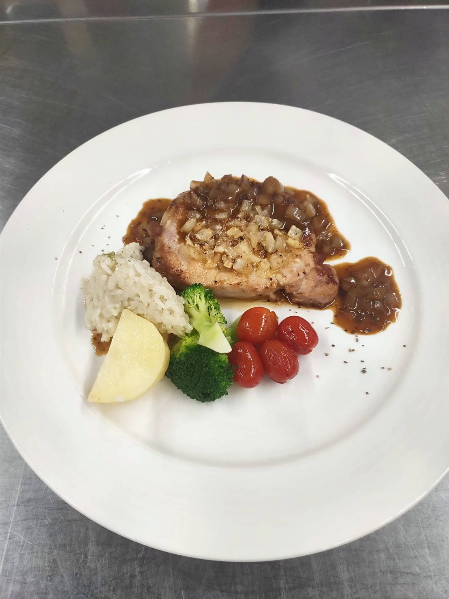

製作方法: 香料飯：橄欖油1匙，熱鍋冷油，加入洋蔥跟紅蔥頭，加米，一瓢高湯，
30秒再加一次，少許白胡椒粉，少許高湯，少許鹽，蓋鍋30秒
豬排：馬鈴薯塊煮軟，熱鍋，油，番茄奶油水，花椰菜（一部分）
油，洋蔥蒜頭，倒出來，熱鍋，油，煎肉，奶油，鋪洋蔥蒜頭，灑起司粉，烤（6）
白酒一小匙，油一小匙，蒜頭片，吸收油，花椰菜，灑一些鹽
醬汁：油，洋蔥，少許白酒，一匙梅林辣醬油，一匙紅人，一匙奶油，肉油

地中海酒會海鮮
羅西尼漢堡排
大蒜湯
心得